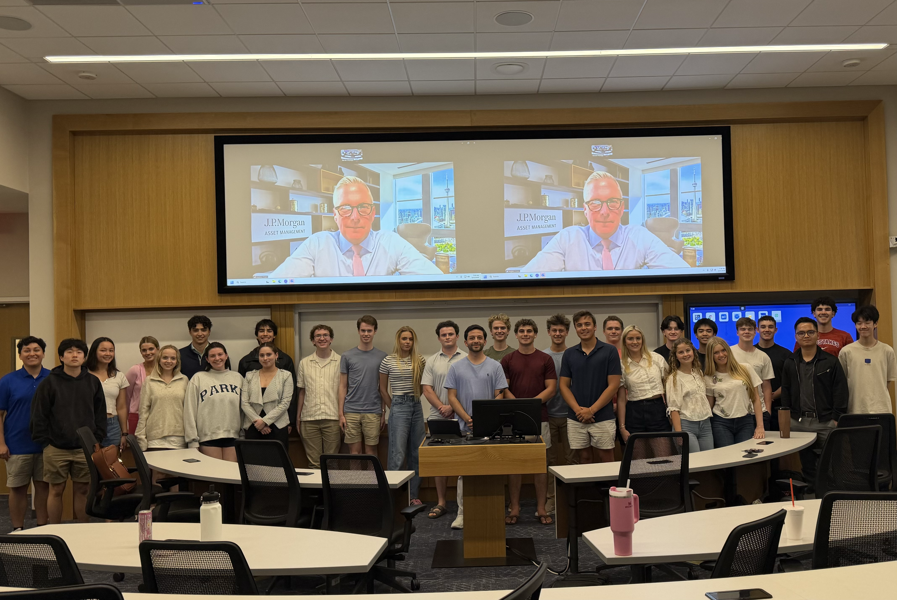

What We Do

The Private Banking & Asset Management Club at Southern Methodist University was founded in Fall '25 to broaden students' exposure beyond career paths in investment banking, private equity, corporate finance and others. We address a critical gap in campus resources by educating students on how private wealth teams serve high-net-worth (HNW) and ultra-high-net-worth (UHNW) families, and how asset managers structure and distribute vehicles like ETFs, mutual funds, and private alternatives. We equip members to build investment theses, deliver mock client recommendations, and conduct macro market analysis.
Our curriculum will introduce students to a comprehensive introduction to private banking and asset management, highlighting capital markets, economic analysis, products and their risk, investment security selection, and psychology of capital. We aim to provide access to experienced guest speakers from leading private banks, RIA's, and asset management firms, offering industry insights alongside resume and interview preparation as an additional resource.

We welcome students across all majors who demonstrate a strong interest in wealth management, market dynamics, and front-office practices. With a preference for those with a passion for investments, building relationships, and portfolio construction.